Workshop
From human knowledge to agents
Agenda
01
Predicting takes understanding
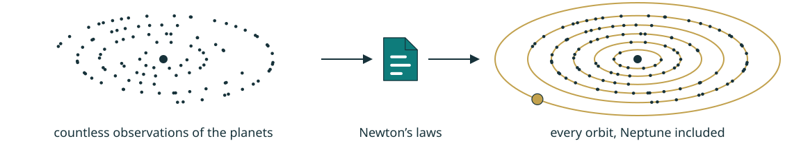
Predicting takes understanding
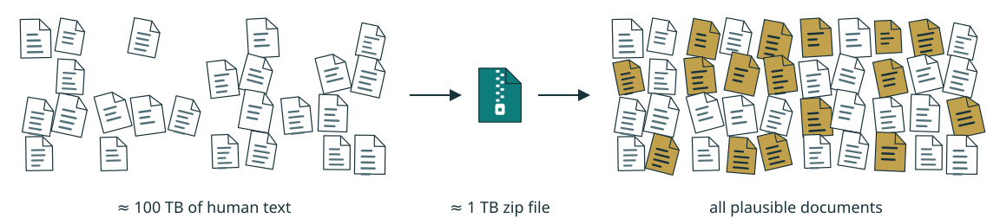
Predicting takes understanding
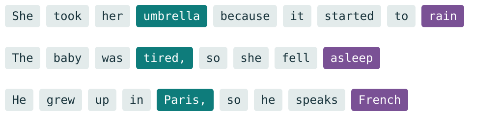
02
The base model
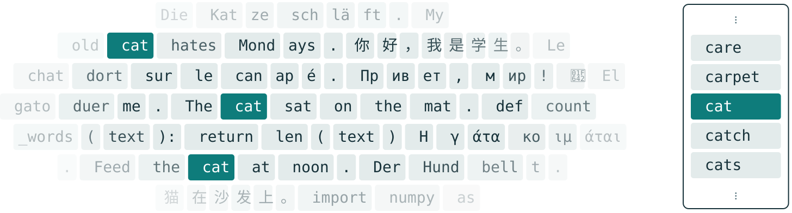
The base model
The base model
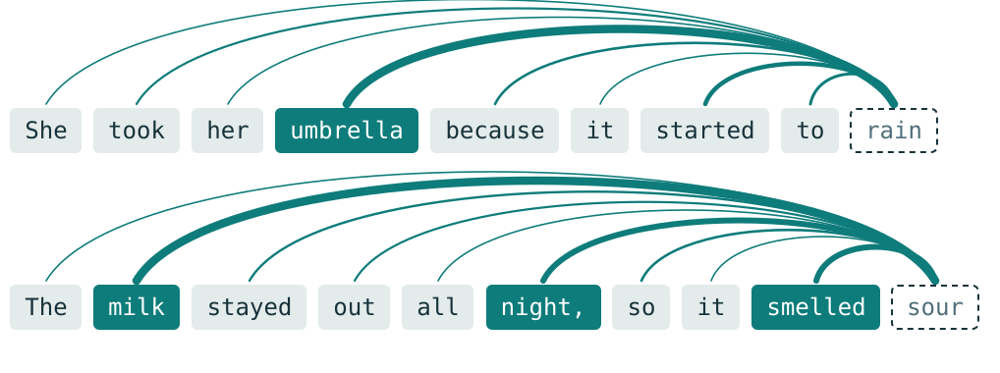
The base model
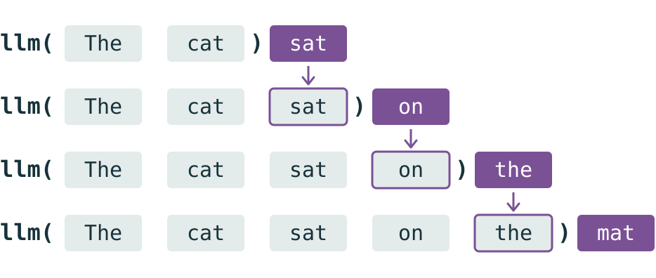
The base model
+ 255,996 other tokens, sharing the remaining 17%
The base model
03
The chatbot
The chatbot
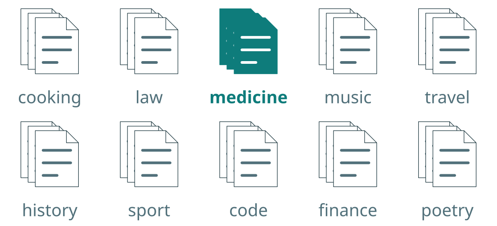
The chatbot
The chatbot
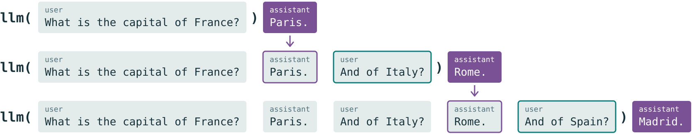
The chatbot
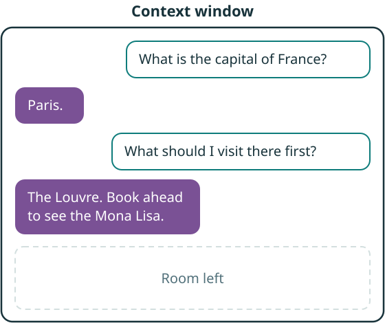
The chatbot
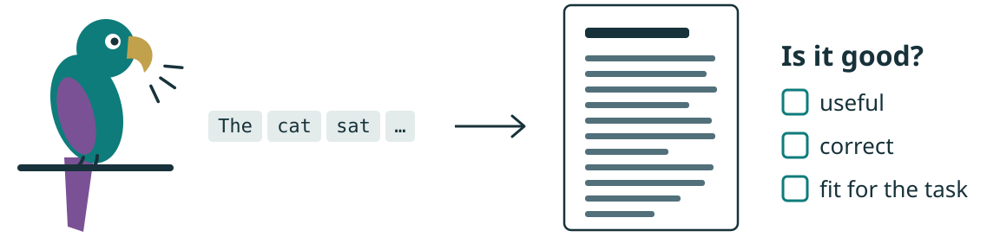
The chatbot
The chatbot
The chatbot
The chatbot
The chatbot
A boat-racing agent looped to farm points instead of finishing (CoastRunners, 2016). Coding agents special-case the tests.
Trained on human approval. An update was rolled back in April 2025 for being too flattering.
In simulated companies, some LLMs chose blackmail to avoid being replaced (Anthropic, 2025).
The more autonomy, tools and task length we give, the more it matters: self-verification is only as good as the criteria you set.
The chatbot
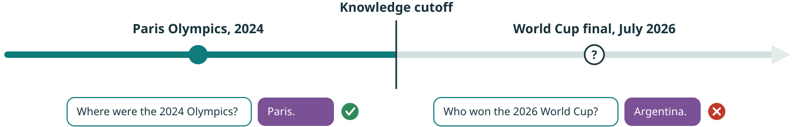
The chatbot
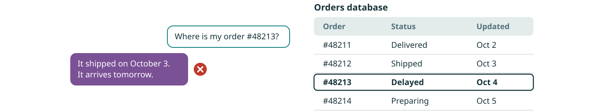
The chatbot
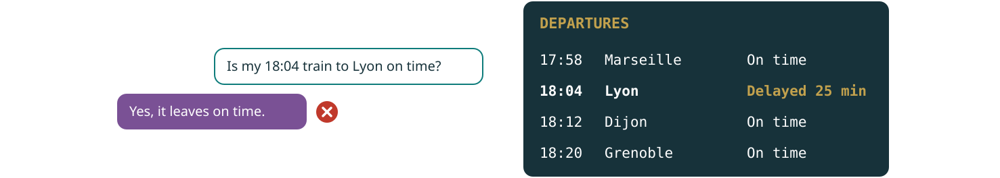
The chatbot
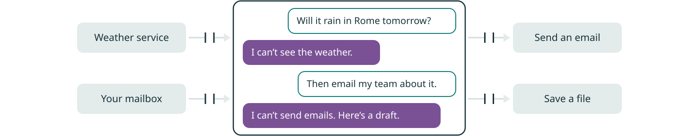
The chatbot
It writes remarkably well. Next: software that acts on what it writes.
04
The environment
The environment
No settled definition: the LLM? The software around it? Both? Vendors mean all three.
Let’s build one, step by step, from the Part 1 chatbot.
The environment
weather(city="Paris", day="Sat")The environment
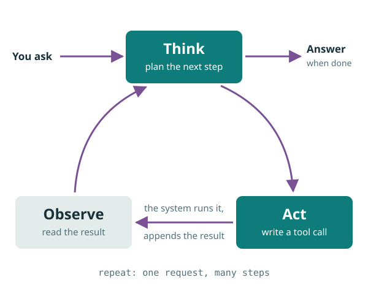
After every answer, it stops: your turn.
A tool call? Run it, append the result, call the LLM again. It stops only when the LLM answers.
The environment
Agency is a degree: how much it does between two of your messages.
The environment
The environment
The environment
The environment
The average of everything it has read.
A position, anchored in your sources.
read_file puts the source into the context: grounding, for free.The environment
“The total is about 48,000 €”: plausible, unverifiable.
sum(rows) = 48,317.40 €: exact, auditable.
The agent writes code, runs it in a sandbox, and uses the result.
5,000 rows fit in context, but row 4,000 won’t get row 12’s care
Exact totals and rates, not plausible-looking numbers
Same script, next month’s file, auditable line by line
Looping, chaining and recovering tool calls
Plus structured data parsing and precise tool execution.
The environment
The environment
The environment
The environment
05
What they don’t see yet
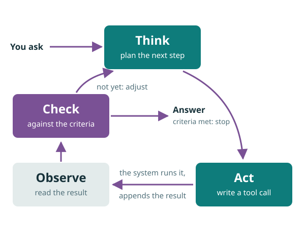
What they don’t see yet
What they don’t see yet
…then look again: the interface moved.
create_invoice(…)Fast, cheap, stable.
What they don’t see yet
The concept lands: the LLM writes requests, software acts
DeepSeek-R1: thinking learned by RL, in an open LLM
Four Harry Potter books in one call
Agents write code to chain their tools
Much less context rot
Hours-long work; images and spatial representation
What they don’t see yet
What they don’t see yet
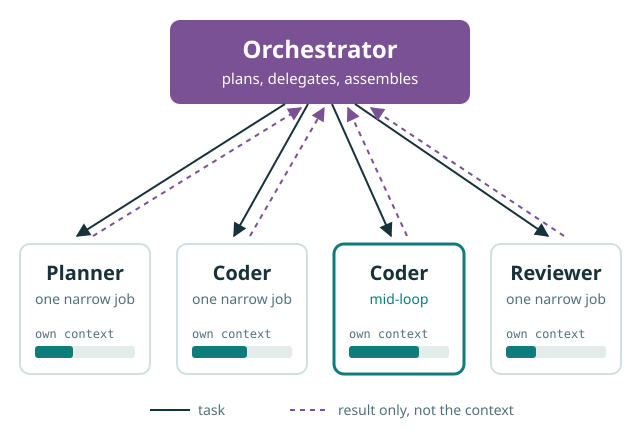
What they don’t see yet
OpenAI’s own account, announced Sept 2026. Not an ablation, and credit for the idea is disputed.
06
The new job
Raw completion engine, prone to hallucinations and prompt sensitivity
Human in the loop: today’s standard usage
Machine in the loop: the agent checks its own work
Specialised agents on open-ended science and engineering problems
The new job
The new job
Prompt, read, spot the error, correct by hand.
Set the goal and the criteria; the agent executes, checks, self-corrects.
You no longer supply the step-by-step method. You still own the oversight.
The new job
Thank you
Parked
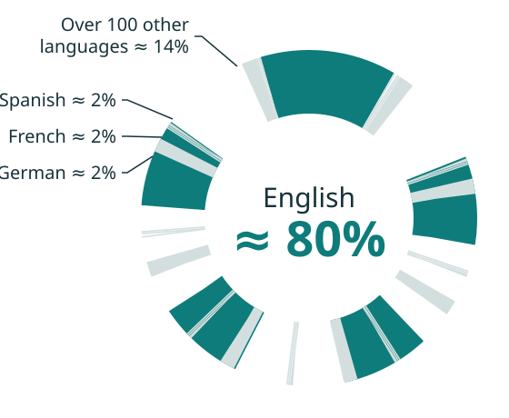
Parked
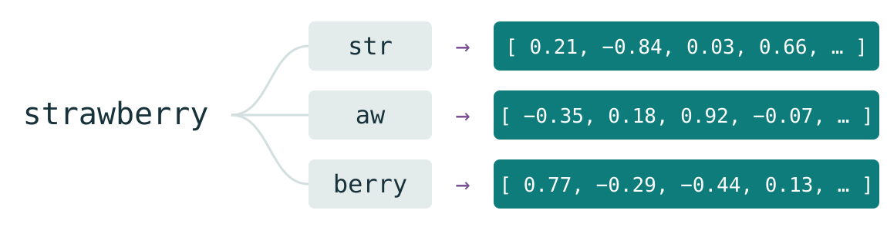